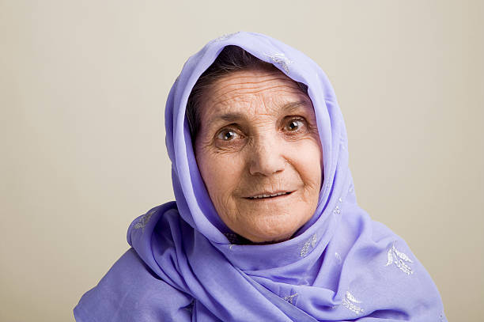
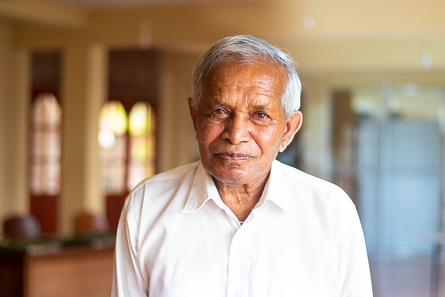

User Profiles
Amrit Preet Singh
Interests: Gardening, Reading
Bio: Enjoys spending time outdoors and exploring new books.
Social Media: Twitter
Arsh Preet Kour
Interests: Painting, Traveling
Bio: Passionate about creating art and exploring different cultures.
Social Media: Instagram

Muskaan ALtaf
Interests: Cooking, Photography
Bio: Loves experimenting with new recipes and capturing moments through photography.
Social Media: Facebook

Robin Sharma
Interests: Yoga, Music
Bio: Finds peace in yoga practice and enjoys exploring various music genres.
Social Media: LinkedIn